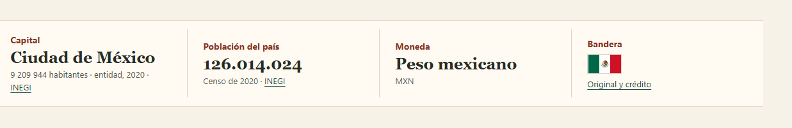
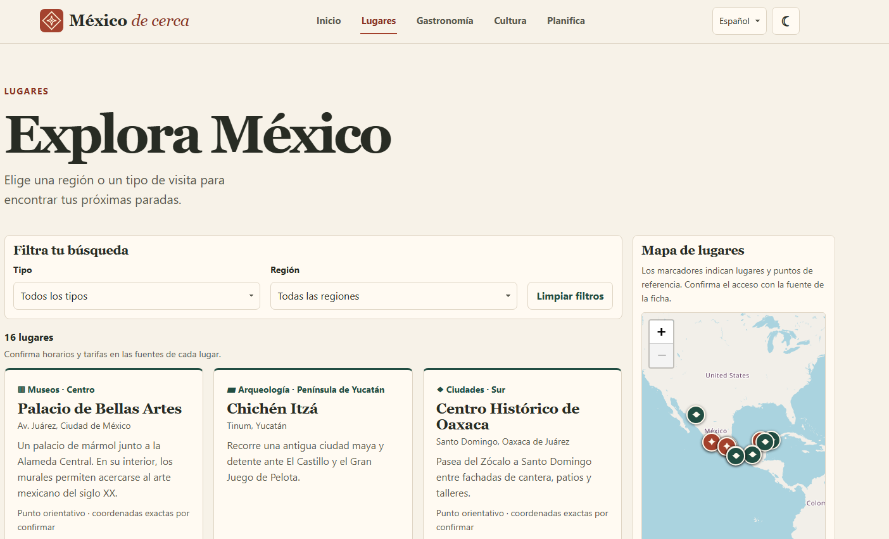
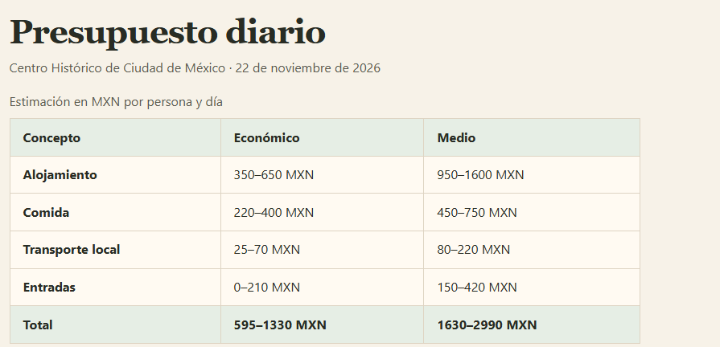
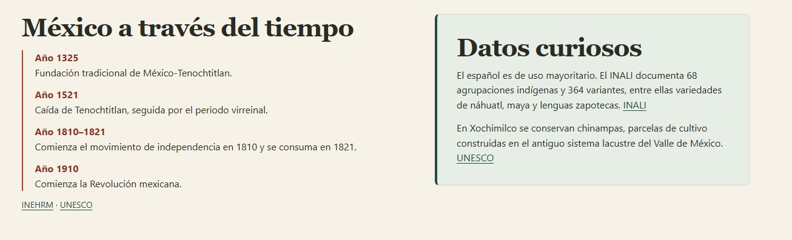

Fase 3 de 3
Retoques de contenido y diseño
Tras revisar la primera versión, pedí pequeños cambios de lectura y una distribución más compacta de Lugares en escritorio.
Ir a las capturas del resultadoPedir los retoques
Yo · Consulta a ChatGPT
vale me gusta bastante la pagina, cambiaria que la poblacion del pais el formaato sea 126.014.024 y no 126 014 024. en México a través del tiempo, pong en los años "año", porque asi de primeras puede despistar y si ves 1325 tienes que leer el contexto para saber que se refiere a año. Y en presupuesto diario igual, que ponga MXN al lado de las cifras. y esta muy bien en movil la web, pero en pc el apartado de Lugares se despliegan verticalmente los lugares y quiero que se despliguen asi, com en la foto sabes?? el ejemplo es para que lo queiro de ese formtato visual con el mapa un poco mas pegado a la derecha y pelin mas pequeño y se distribuyan bien
ChatGPT (GPT Sol 6.2) · Resumen
Convirtió la revisión en cuatro cambios para Codex. Concretó los separadores de miles en español, el prefijo de los años y la unidad del presupuesto en ambos idiomas. Para Lugares propuso una cuadrícula de fichas con el mapa a la derecha y pidió conservar los controles de móvil.
ChatGPT · Prompt para CodexLeer el encargo original
Aplica estos retoques a la guía «México de cerca» en la carpeta del proyecto abierta. La web ya me gusta y en móvil se ve bien. Trabaja sobre la versión actual y haz cambios puntuales. 1. Inicio → Población del país En español, muestra «126.014.024» con puntos como separadores de miles. En inglés, conserva «126,014,024». 2. Inicio → México a través del tiempo Añade «Año» delante de cada fecha de la cronología, por ejemplo «Año 1325». En inglés, usa «Year 1325». Conserva las fechas y descripciones actuales. 3. Planifica → Presupuesto diario Añade «MXN» justo después de cada rango de precios, también en la fila de totales. Ejemplo: «450–700 MXN». Hazlo en ambos idiomas y comprueba que la tabla siga siendo legible a 320 px sin provocar desplazamiento horizontal en la página. 4. Lugares → Distribución en PC Ahora las fichas salen en una sola columna vertical en escritorio. Quiero que se distribuyan en filas, con el mismo ritmo visual que las tarjetas de Gastronomía: tres columnas cuando haya espacio para que se lean cómodamente y dos en escritorios más estrechos. Usa la captura adjunta o la propia página de Gastronomía como referencia de separación y alineación. Mantén las fichas a la izquierda y desplaza el mapa hacia el borde derecho del área de contenido. Hazlo un poco más estrecho y bajo para dar más espacio a las tarjetas. Puedes poner los filtros encima de la cuadrícula si así encajan mejor. Conserva en móvil el diseño actual, incluido el selector «Lista / Mapa» y el botón «Filtrar». Comprueba Lugares a 1440, 1280 y 390 px. Verifica que los filtros siguen actualizando tanto las fichas como los marcadores y que «Ver en el mapa» abre el lugar correcto. Revisa también el formato de los textos en ambos idiomas y el presupuesto a 320 px. Aplica los cambios directamente en los archivos del proyecto. Al terminar, dime qué archivos modificaste y qué pruebas pudiste ejecutar.
Resultado de los cambios
Las capturas muestran la población como 126.014.024, las fechas precedidas de «Año», los importes con MXN y tres fichas en la primera fila de Lugares, con el mapa a la derecha.
Capturas del resultado








Yo · Valoración del resultado
Me gusta bastante el resultado.